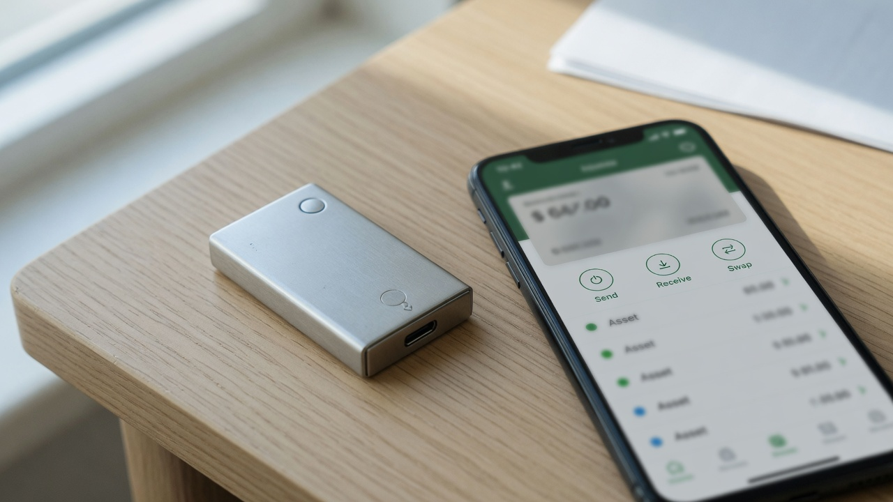
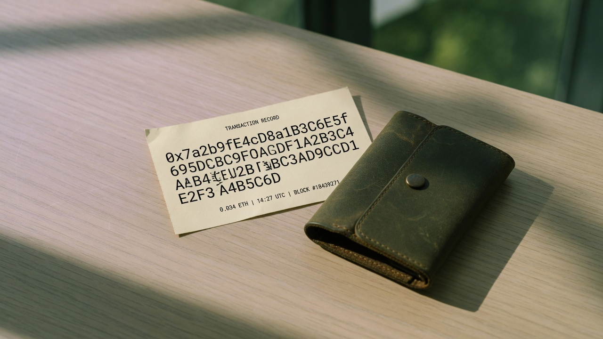

Crypto terms that actually show up in a wallet.
Most glossaries list every protocol word. This one covers the terms you meet the first time you send, receive, or wait for a payment.
If you want the illustrated overview of hashing and signatures, start with the big picture. This page stays on the user vocabulary: keys, fees, confirmations, and the difference between an exchange balance and coins you can spend yourself.
Wallet, private key and seed

A wallet is software or a device that holds the keys used to authorize payments. It is not a box of coins. The network stores balances; the wallet stores the secret that can move them.
The private key is that secret. Anyone who has it can spend. The matching public key is how the network checks a signature without learning the private key. A seed phrase (recovery phrase) is a human-readable backup that can rebuild those keys. A swap site, a card issuer, or a support chat never needs it.
If you lose the seed and the device, the coins are gone. If someone else copies the seed, they can empty the wallet later, even if you still have the device. That is why a hardware wallet helps for savings and a hot wallet is for amounts you can afford to operate with daily. The next guide covers that choice in how to start using crypto.
Address

An address is the string you paste when someone should pay you. Bitcoin addresses often start with bc1. Ethereum and most EVM chains use a 0x hex string. Solana addresses are Base58 strings of similar length to a public key.
Sending to the right format on the wrong network can lose funds. USDC on Ethereum is not the same asset as USDC on Solana or Base. The wallet that generated the address is the one that can spend what arrives there, provided you sent on a network that wallet actually supports.
Gas, fees and why a payment sits
A fee pays the computers that include your payment in a block. Ethereum calls this gas: you pay a base fee that is burned and a tip to the proposer. Bitcoin miners rank transactions by fee rate. Solana charges a small signature fee and, for some actions, a priority fee.
Fees move with demand. A transfer of the same dollar amount can cost cents one hour and much more the next. A wallet that estimates a fee is guessing from current conditions, not promising inclusion.
Mempool and block
After you sign, your wallet broadcasts the transaction. Nodes that accept it keep a copy in a mempool (memory pool): a waiting room of valid payments that are not yet in a block. There is no single shared mempool. Each node has its own view.
A block is a batch of transactions plus a header that links it to the previous block. Bitcoin targets about ten minutes between blocks. Ethereum slots are 12 seconds. Solana produces slots on the order of a few hundred milliseconds; the official explorer on 20 September 2026 showed a one-minute average slot time near 268 ms.
Confirmation and confirmation time
Confirmation time is the wait from broadcast until a payment is buried under enough later blocks that you are willing to treat it as settled. Inclusion in one block is the first confirmation. Every block after that adds one more. Explorers such as Etherscan print that count next to the transaction. Solana explorers usually show a status (processed, confirmed, finalized) rather than a large integer.
How many confirmations “matter” depends on the chain and on who is taking the risk. Checked 20 September 2026:
| Network | What one confirmation is | Typical wait people actually use |
|---|---|---|
| Bitcoin | The payment is in a block. New blocks target about 10 minutes. | Small trusted payments often take 1 confirmation. Exchanges commonly wait for 3 to 6. Six confirmations is about an hour and is the usual high-value convention. The protocol never declares absolute finality. |
| Ethereum | A slot is 12 seconds. The first block in an epoch of 32 slots is a checkpoint. | Inclusion is one slot. Economic finality needs two epochs of supermajority votes, about 12.8 minutes. Many services credit after a handful of blocks; large bridges wait for finality. Source: ethereum.org proof of stake. |
| Solana | A slot. Commitment has three levels: processed, confirmed, finalized. | Processed is optimistic and sub-second. Confirmed usually means votes from roughly two-thirds of stake (a few slots). Finalized waits for 32 confirmed slots, on the order of 8 to 13 seconds in 2026 measurements. Circle’s CCTP docs, checked the same week, use 2 to 3 slots for fast transfers and 32 for standard finality. |
Sources dated 20 September 2026: Ethereum proof of stake, Circle CCTP finality, Solana explorer cluster stats, Bitcoin’s conventional six-block wait.
Finality
Finality is the point after which reversing a payment would be so expensive or so unlikely that honest software treats the history as settled. Bitcoin never reaches that in the strict sense; confidence just grows with depth. Ethereum finality is economic: two-thirds of stake would have to be slashed to revert a finalized checkpoint. Solana’s finalized commitment is the explorer status you want for a large transfer.
A merchant who releases goods at one confirmation is taking a reorg risk. An exchange that waits for six Bitcoin blocks or for Ethereum finality is buying time. Neither number is magic. It is a tradeoff between speed and the cost of being wrong.
UTXO versus account
Bitcoin uses an unspent transaction output model (UTXO). Each coin you can spend is a discrete output from an earlier payment. You spend whole outputs and receive change. Ethereum and Solana use accounts: a balance lives at an address and a payment subtracts from it.
You do not need the jargon to send. You do need it when a wallet shows several Bitcoin inputs, a change address, or an Ethereum nonce. The nonce is a counter that stops the same Ethereum payment from being replayed.
CEX versus DEX
A centralized exchange (CEX) is a company. You deposit, it credits an account, and you withdraw later if the company, your verification status, and the network all allow it. A decentralized exchange (DEX) is software on a chain. You sign a swap from your wallet. You still trust the smart contract, the interface, and the token you receive.
An exchange balance is an IOU. A wallet balance you can sign for is yours until you send it. Mixing those two is how people lose coins to a withdrawal halt or to a phishing site that looks like a DEX.
Stablecoin
A stablecoin is a token designed to stay close to a unit of fiat, usually one US dollar. USDC and USDT are the ones you will see on cards and in DeFi. Some are backed by cash and short-term treasuries held by an issuer. Some, such as Ethena’s USDe, are synthetic: they hedge crypto collateral with short perpetual futures. That design is the subject of the dollar-yield guide.
Stable is a target, not a promise. An issuer can freeze tokens. A synthetic dollar can trade off the peg if the hedge fails. Treat a stablecoin as a tool for moving value, not as a bank deposit.